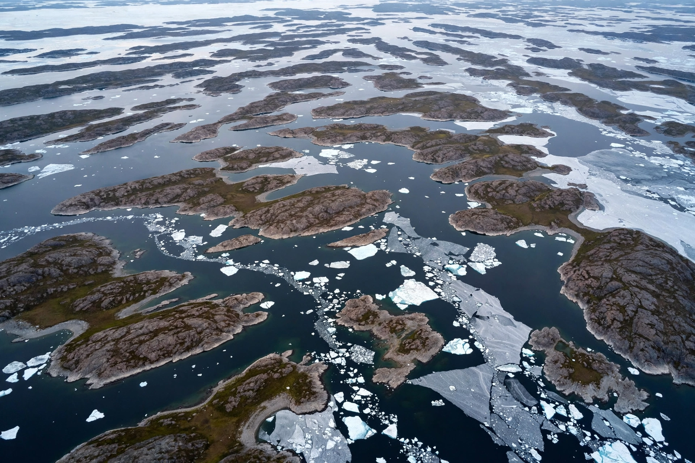

Northwest Passage
| Route | Atlantic to Pacific via Canadian Arctic |
|---|---|
| First transit | Amundsen, 1903–1906 |
| Status | Seasonally navigable |

The Northwest Passage is the sea route through the islands of the Canadian Arctic Archipelago connecting the Atlantic and Pacific oceans. Long sought by European explorers as a short cut to Asia, it threads the channels between Canada's mainland and its high Arctic islands, north of the continent's shore.
History
Centuries of expeditions — many fatal, including Franklin's lost expedition of 1845 — searched for the passage. Roald Amundsen made the first complete transit in the small ship Gjøa in 1903–1906, and the first single-season transit followed in 1944. The supertanker Manhattan's 1969 voyage, escorted by icebreakers, sharpened the sovereignty question: Canada regards the waters as internal, while the United States and others treat the route as an international strait.
Modern era
Summer sea-ice decline in the Arctic Ocean has made the passage seasonally navigable to ordinary shipping, and transits — cargo, cruise and adventure vessels — have grown, raising questions of search and rescue, charting and environmental protection in a remote region administered from Canada's north.